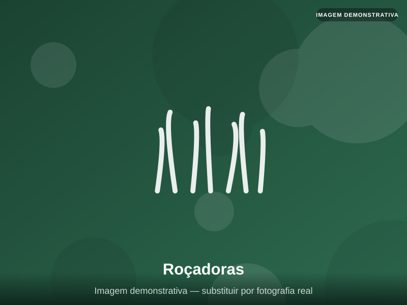

Corte de VegetaçãoRoçadoras
Equipamentos robustos para corte de ervas e vegetação em terrenos de qualquer dimensão.
- Adequadas a grandes áreas
- Diferentes níveis de potência
- Uso profissional e regular
Modelo e preço sob consulta
Pedir Informações